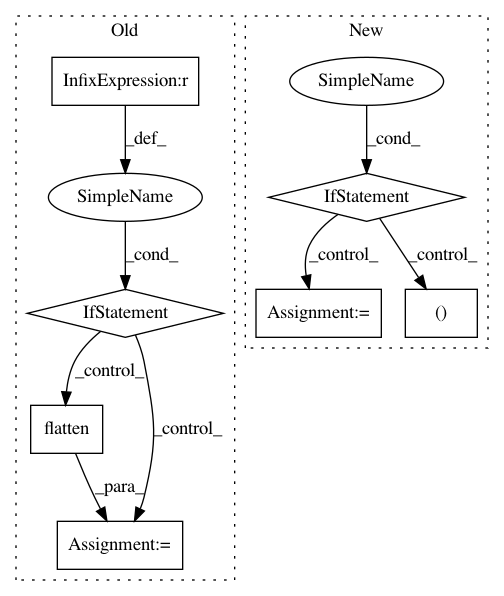

020a69a5d64cf60e365ba74c595fb3082f254e58,lifelines/fitters/__init__.py,ParametricRegressionFitter,_fit_model,#ParametricRegressionFitter#Any#Any#Any#Any#Any#Any#Any#Any#,1765
Before Change
self._initial_point_dict = initial_point_dict
initial_point_array, unflatten = flatten(self._initial_point_dict)
if initial_point is not None and isinstance(initial_point, dict):
initial_point_array, _ = flatten(initial_point) // TODO: test
elif initial_point is not None and isinstance(initial_point, np.ndarray):
initial_point_array = initial_point // TODO: test
if initial_point_array.shape[0] != Xs.size:
raise ValueError("initial_point is not the correct shape.")
self._neg_likelihood_with_penalty_function = partial(
After Change
args=(Ts, E, weights, entries, Xs, unflatten_array_to_dict),
options={**{"disp": show_progress}, **self._scipy_fit_options},
)
if results.fun < minimim_ll:
minimim_ll, minimum_results = results.fun, results
if show_progress:
print(minimum_results)
if minimum_results.success:
In pattern: SUPERPATTERN
Frequency: 3
Non-data size: 7
Instances
Project Name: CamDavidsonPilon/lifelines
Commit Name: 020a69a5d64cf60e365ba74c595fb3082f254e58
Time: 2020-03-05
Author: cam.davidson.pilon@gmail.com
File Name: lifelines/fitters/__init__.py
Class Name: ParametricRegressionFitter
Method Name: _fit_model
Project Name: automl/auto-sklearn
Commit Name: 84dd314904ba2004ab35bbea65c5f2cb684e073c
Time: 2016-02-24
Author: a.domashnev@gmail.com
File Name: autosklearn/estimators.py
Class Name: AutoSklearnClassifier
Method Name: predict
Project Name: automl/auto-sklearn
Commit Name: 432331c2ea292f2f8b756901ea3c8bda04817ec5
Time: 2017-10-20
Author: feurerm@informatik.uni-freiburg.de
File Name: autosklearn/estimators.py
Class Name: AutoMLClassifier
Method Name: _process_target_classes